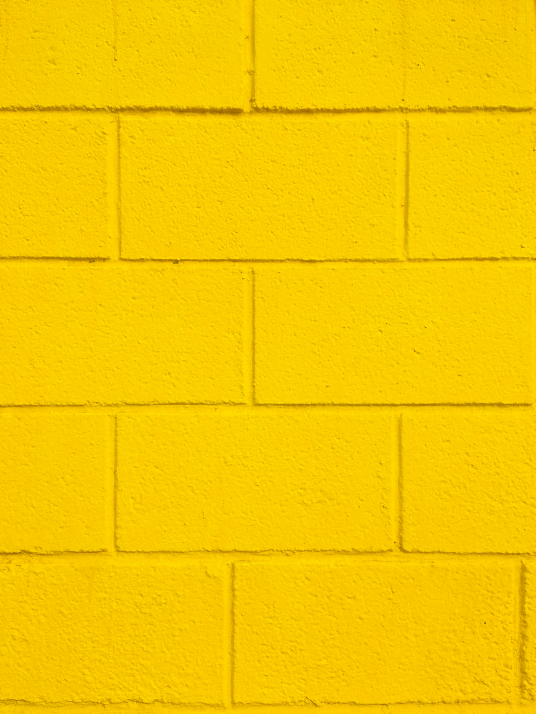

By the Unifolllow editorial team · Last reviewed October 26, 2026

A feed is not a neutral stream. It becomes a repeated input into your day, so it is worth shaping it around what you want more of: friends, useful expertise, local information, humor, art, or work that inspires you. Curating a feed does not require a dramatic purge or a public statement.
Start by noticing the accounts that reliably produce a clear outcome. Keep accounts that help you learn, connect, or feel energized. Mute accounts you do not want to see often but do not want to remove. Unfollow accounts that no longer fit. The right option is the least disruptive one that gives you the experience you want.
Do this for your own attention, not to send a message to another person. If you notice that follower checking is pulling you back into comparison, try the boundaries in our social-media reset.
If you have any questions or feedback, please contact us: